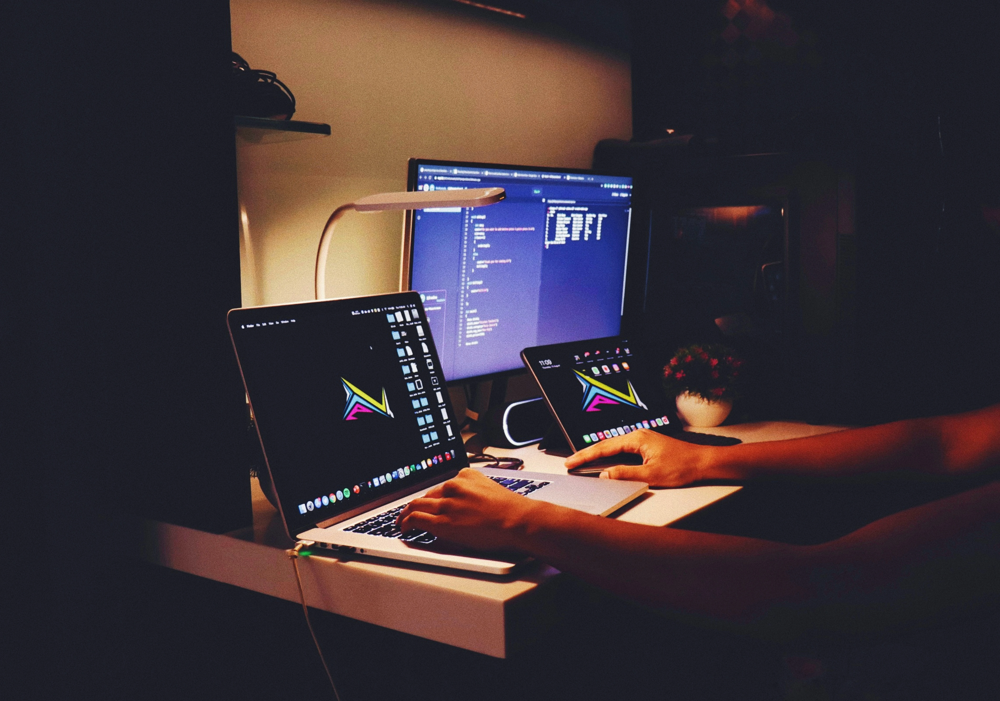
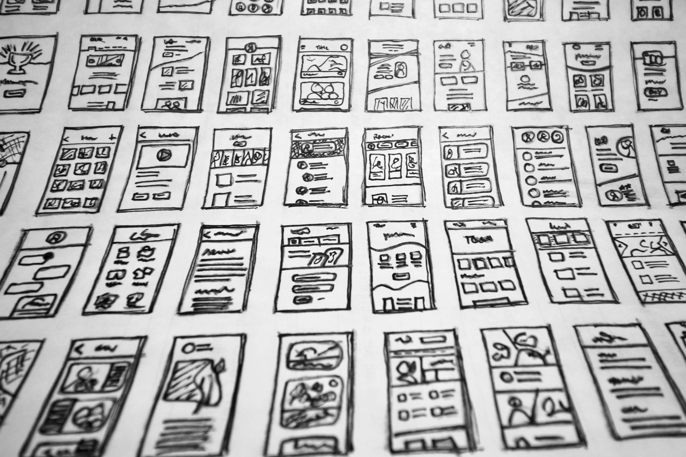
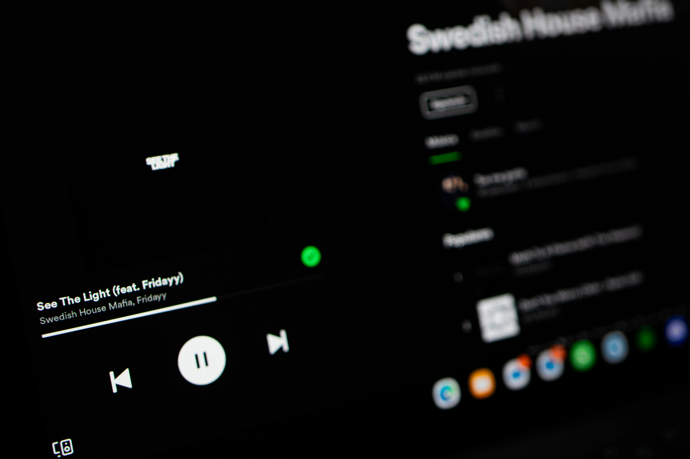

In startup land, there’s a tendency to glorify the big launch, the shiny new feature, the growth spike, the viral moment. But the truth? Most weeks don’t look like that. Some weeks are just plain messy. And that’s when the real work happens.
Last week, I set out with a clear goal: ship a major onboarding improvement for BoxBoard. On paper, it was a straightforward win. But by midweek, I realized I was knee-deep in server configurations, struggling with AWS limits, and reevaluating tools I thought were locked in.
Here’s what happened, and what I learned.
🛠 When a “Simple” Tool Change Becomes a Full DevOps Saga

I’d been juggling Google Analytics and Mixpanel to track user behavior and marketing leads, but they never gave me the visibility I wanted. So I decided to explore PostHog, a more customizable, all-in-one alternative.
I figured I’d self-host it on AWS for control and cost savings.
Spoiler: it did not go smoothly.
The install stalled repeatedly. EC2 configs weren’t enough. The server kept maxing out, and I found myself rebuilding the stack more than once just to maybe get the dashboard running. By the third rebuild, I finally stopped and asked: “Why am I burning a week on this?”
I pivoted to PostHog’s cloud version and got things up quickly. And it’s already proving useful, especially for tracking where my marketing leads are coming from.
🧱 Shipping Foundations (Even If Nobody Sees Them)

Beyond analytics, I shipped a new invite flow for gyms, now they can onboard members directly via CSV upload or email invite. It’s not a glamorous feature, but it’s a game-changer for busy gym owners.
And while I wanted to ship more, that one feature turned out to be several days of work: testing, UX polishing, and edge case handling. You know… software.
📏 What I Learned

- Estimate x3 for unfamiliar tech. I asked AI to help forecast time on my EC2 setup, but underestimated just how many edge cases I’d hit. When you’re outside your usual zone, pad your timeline more than you think.
- Don’t let frustration snowball. Midweek, I caught myself getting cranky. That’s when I stepped back, reframed the goal (“test PostHog” not “perfect PostHog setup”), and found a way forward.
- Reflect before you spiral. I try to journal weekly. Some weeks feel like a slog in the moment, but when I zoom out, I see progress. And even if it’s not flashy, laying solid foundations is still a win.
🎯 A Word for Fellow Solo Builders
If your week didn’t result in a splashy demo or viral post, that’s okay. Progress often looks like wrangling a bug, refining infrastructure, or rethinking a process. It looks like momentum.
Celebrate that.
And when next week starts, sprinkle in some “candy”, the fun, energizing work that reminds you why you’re doing this. You’ve earned it.